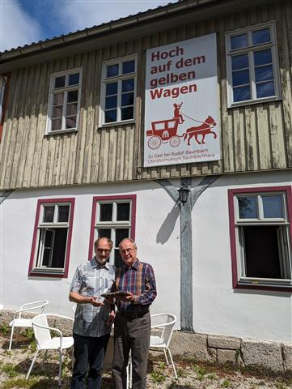

Meiningen. Am 27. Mai 2024 wurde der langjährige Leiter des Literaturmuseums Baumbachhaus in den Ruhestand verabschiedet. Literaturvereinschef Holger Uske bedankte sich aus diesem Anlass bei Dr. Andreas Seifert für die langjährige erfolgreiche Zusammenarbeit.
Über viele Jahre hinweg, zuletzt auch 2024, endeten die alljährlichen Werkstatttage des Vereins mit einer öffentlichen Lesung im Baumbachhaus, dem Wohnhaus des Dichters Rudolf Baumbach. Der Südthüringer Literaturverein wollte es daher nicht versäumen, für die vielfältigen Begegnungen mit Dr. Seifert selbst, aber auch mit dem historischen Ambiente des Hauses und seinen literarischen Schätzen zu danken.
Alles Gute für Dr. Andreas Seifert auf seinem weiteren gewiss literarisch begleiteten Lebensweg!
